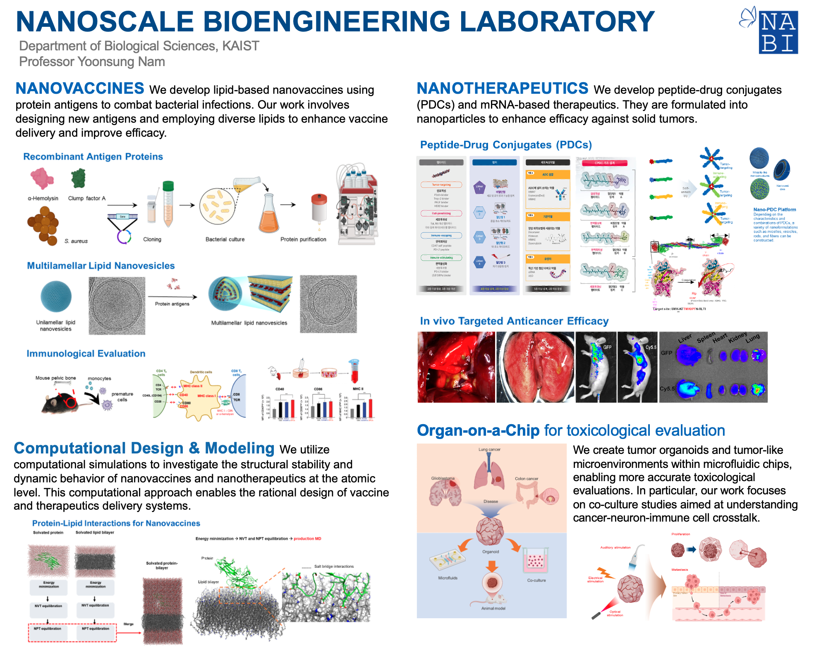

Our group is dedicated to designing and fabricating functional nanostructures through biomolecular self-assembly. We focus on applications in developing vaccines and therapeutics to combat infectious diseases and cancer. We explore a variety of biochemical recognition and selection mechanisms across biological systems.
The research questions we pursue are centered around two main themes: how can biological engineering principles and advanced tools be applied to biomolecular design in practical contexts? Specifically, we are interested in how natural selection, molecular self-assembly, and computational simulations can be harnessed to engineer synthetic nanomaterials tailored for specific biological functions.
We are asking: what are the minimal essential elements of biomolecular motifs necessary for effectively recognizing pathogenic molecules? How do these key molecular structures interact with immune cells to initiate and modulate an immune response? We aim to precisely understand the specificity and affinity of these motifs, investigating the genetic and molecular mechanisms that govern the formation and function of biological scaffolds.
Multilayered lipid vesicles for nanovaccines
The success of COVID-19 vaccines has sparked renewed interest in lipid nanoparticles (LNPs) as versatile, biocompatible, and biodegradable carriers for drugs and genes. However, these particles are susceptible to environmental and physiological stresses that can lead to the premature release of their contents. Enhancing their stability is crucial, and while adding polyethylene glycol (PEGylation) extends their in vivo lifespan, it doesn’t fully address their stability challenges. In contrast, it causes another problem – inefficient endosomal escape and immunogenicity.
To improve the structural integrity of lipid carriers and the endosomal escape of antigens, we have proven the effectiveness of multilayered lipid structures – a distinctive LNP platform for vaccine delivery. This method involves precisely stacking multiple lipid layers through non-covalent bonds, preserving the natural properties and functionality of encapsulated biomolecules such as proteins and nucleic acids.
Our latest efforts focus on a biomimetic strategy to create highly robust multilamellar lipid vesicles. We are actively refining these multilayered structures to optimize their performance for vaccine delivery.
Self-assembled nanoparticles for drug and gene delivery
Self-assembled nanoparticles are nanocarriers adept at navigating physiological barriers in vivo. Typically, they consist of a hydrophobic core surrounded by a hydrophilic outer shell. Their amphiphilic nature enables them to spontaneously aggregate in aqueous solutions. These include a diverse array of structures such as micelles, polymeric nanoparticles, lipid nanoparticles, nucleic acids, carbohydrates, metal-ligand complexes, and inorganic nanostructures.
The self-assembly process is increasingly important for controlling the ultimate complex structure of the nanoparticle and optimizing its functional properties. The primary challenges in developing self-assembled nanoparticles include enhancing delivery efficiency and bioavailability, prolonging circulation time, achieving targeted delivery, controlling the release of active agents, and safeguarding the active ingredients from the external environment.
In our group, we have concentrated on creating carriers for siRNA and anti-cancer drugs, successfully proving their therapeutic efficacy in various animal tumor models. Specifically, we have pioneered foundational technologies for drug and gene delivery across diverse platforms. This includes harnessing the importance of multivalency in cell targeting moieties on nanoparticle surfaces, discovering novel peptide ligands, managing drug release through photonic activation, and utilizing serum albumin-based nanoparticles.